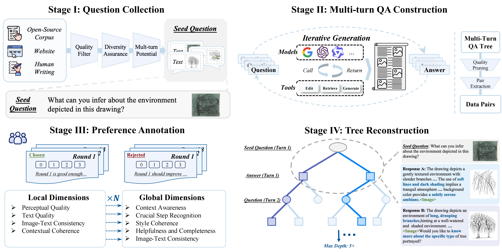
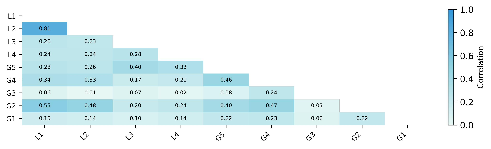
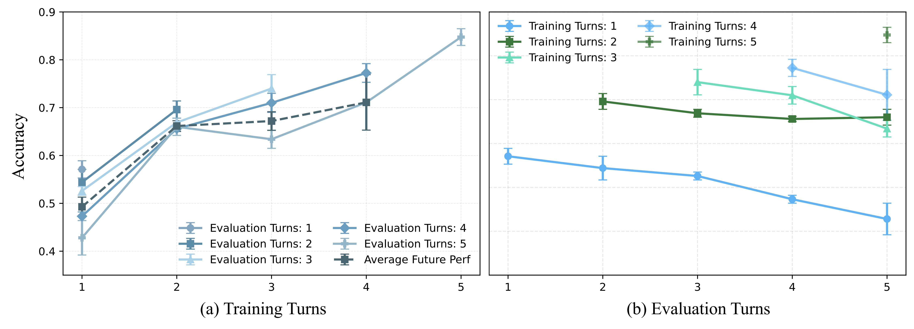
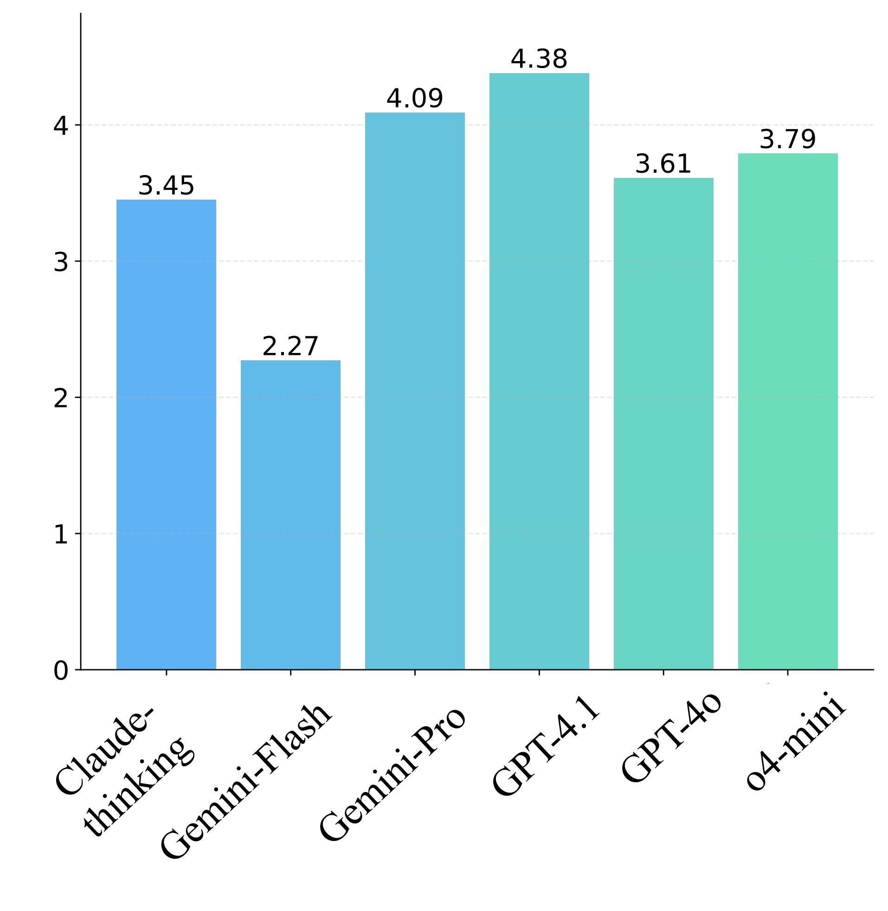
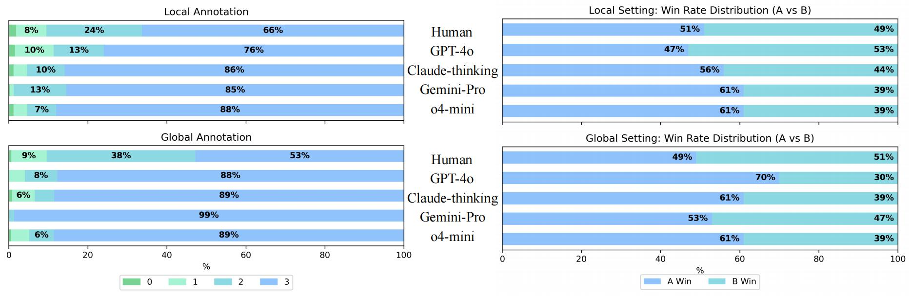

As multimodal large models (MLLMs) continue to advance across challenging tasks, a key question emerges: What essential capabilities are still missing? A critical aspect of human learning is continuous interaction with the environment -- not limited to
language, but also involving multimodal understanding and generation. To move closer to human-level intelligence, models must similarly support multi-turn, multimodal interaction. In particular, they should comprehend interleaved multimodal contexts
and respond coherently in ongoing exchanges. In this work, we present an initial exploration through the InterMT -- the first preference dataset for multi-turn multimodal interaction, grounded in real human feedback. In this exploration, we particularly emphasize the importance of human oversight, introducing expert annotations to guide
the process, motivated by the fact that current MLLMs lack such complex interactive capabilities. InterMT captures human preferences at both global and local levels into nine sub-dimensions, consists of 15.6k prompts, 52.6k multi-turn dialogue instances, and 32.4k human-labeled preference pairs. To compensate for the lack of capability for multi-modal
understanding and generation, we introduce an agentic workflow that leverages tool-augmented MLLMs to construct multi-turn QA instances. To further this goal, we introduce InterMT-Bench to assess the ability of MLLMs in assisting judges with multi-turn, multimodal tasks. We demonstrate the utility of InterMT through applications such as judge moderation and further reveal the multi-turn scaling law of judge model. We hope the open-source of our data can help facilitate further research on aligning current MLLMs to the next step.
Introduction
Humans perceive the world through dynamic, multimodal interactions involving text, images, audio, video, and more. Building on the success of multimodal large language models (MLLMs), recent efforts aim to develop general-purpose AI assistants that handle multiple mixed
modalities. A key feature of such general-purpose assistants is to engage in natural multi-turn conversations, perceive and generate any modality, to enable more smooth interaction and grounded understanding.
Recent years have seen community efforts in transplanting alignment techniques, such as Reinforcement Learning from Human Feedback (RLHF), from the text modality to multiple modalities settings. Within this line of research, most studies focus exclusively on either understanding
or generation. The lack of alignment considerations for multimodal mixed input-output settings exacerbates the imbalance across modalities, i.e., modality disequilibrium. Furthermore, existing methods primarily focus on single-turn interactions, where an LLM generates a response
from a prompt and receives immediate alignment feedback. However, real-world interactions typically occur in long-horizon conversations and often feature interleaved multimodal inputs and outputs.
How to improve multi-turn interleaved understanding-generation alignment via human feedback?
Our reflections highlight several key issues in the alignment of MLLMs:
Modality Fusion via Harmonizing Understanding and Generation. To build general-purpose AI assistants, high-fidelity perception and understanding alone are not sufficient. The system should also support the selective generation of multimodal outputs to
effectively communicate, instruct, or interact with users in a natural and contextually appropriate manner.
Modeling Long‐Horizon, Interleaved Multimodal Interactions. Real‐world user–AI exchanges typically span many turns and interleave text, vision, and other modalities. Such interactions demand not only precise instruction following but also sustained attention
and reasoning over an evolving context, approaching near‐human in‐context reasoning capabilities.
Dynamic Human‐in‐the‐Loop Alignment. In extended, multimodal interactions, user preferences continually evolve. Capturing and aligning with these emergent, dynamic preferences calls for genuine, iterative human feedback throughout the interaction.
In response, we introduce InterMT, a human preference dataset designed to capture the complexity and diversity of human intent in multi-turn settings. Specifically, InterMT targets vision-language interaction scenarios involving interleaved understanding and generation. To model dynamic human preferences, InterMT comprises
15604
seed questions that elicit multi-turn, multimodal conversations spanning
15+
domains. Helpfulness is then decomposed into
9
sub-dimensions, capturing both global (conversation-level) and local (turn-level) aspects of human feedback.
Our key contributions are summarized as follows:
The First Multi-turn Interleaved Preference Dataset: To the best of our knowledge, InterMT is the first dataset that captures real human preferences for tasks involving multi-turn and interleaved multimodal understanding and generation. It contains
15604
unique seed questions across diverse categories,
52.6k
multi-turn interleaved vision-language QA instances, and
32459
sets of multi-dimensional human preference annotations.
Agent-based Construction Workflow:InterMT employs a carefully designed agent-based multi-turn QA construction workflow that leverages strong MLLMs augmented with external tools to simulate high-quality real multi-turn interactions.
Decoupled Helpfulness in Multi-turn Multimodal Scenarios:InterMT decomposes the concept of helpfulness for multi-turn, multimodal interactions into two distinct levels: local (turn-level) and global (conversation-level). Furthermore, InterMT breaks down helpfulness into
9
specific dimensions, allowing for a detailed and nuanced evaluation of multi-turn, multi-modal interactions.
Effective for Multi-turn Alignment: Building on InterMT, we investigate methods to model long-horizon values and align dynamic human values. Our findings reveal the phenomenon of preference transfer in multi-turn multimodal interactions, which facilitates preference modeling for predicting human judgments.
Additionally, we identify a scaling phenomenon in multi-turn multimodal judge moderation.
One More Thing We introduce InterMT-Bench to evaluate the ability of MLLMs in assisting judges across multi-turn, multimodal tasks, encompassing three parts: Scoring Evaluation, Pair Comparison, and Crucial Step Recognition. Despite strong reasoning
capabilities, advanced MLLMs fail to align with human values in judgment tasks. However, they show potential in identifying crucial steps in long-context scenarios.
InterMT Dataset
Data Overview
InterMT includes over 15 tasks in vision-language scenarios, capturing communication examples across diverse settings. These examples demonstrate multi-turn, interleaved understanding and generation in six representative domains.

Overview of the four‐stage pipeline for constructingInterMT. Stage I: seed questions are harvested from open‐source corpora, websites, and human writing, then filtered for perceptual quality, diversity, and multi‐turn potential. Stage
II: iterative calls to large models and external tools (e.g. retrieve, generate) produce answer expansions and follow-up questions, forming a candidate QA tree. Stage III: human annotators perform
per‐turn (local) and conversation-level (global) evaluations—covering quality, coherence, context awareness, and completeness—to prune and select preferred branches. Stage IV: the retained branches are reassembled into
deep, coherent QA trees (depth ≥ 5) yielding the final multi‐turn QA pairs for model training.
Dataset Composition
The dataset includes: (1) carefully crafted seed questions for multi-turn, multimodal conversations, and (2) fine-grained human preference annotations at both local and global conversation levels. The seed questions are rigorously
selected and refined to enable more faithful simulation of real-world tasks.
We collect preference data through score evaluations and pairwise comparisons of multi-modal responses at each conversation turn, based on four sub-dimensions. Global conversation helpfulness is then evaluated via five sub-dimensions. Incorporating natural language
feedback further improves annotation quality and alignment with human intent.
Data Card
The dataset is built from a corpus of 100k image-text examples, comprising 72.1% from open-source vision-language datasets, 22.8% from web data, and 5.1% from human-written content. All prompts are refined following constitutional guidelines to improve multi-turn compatibility, resulting in 15604 unique seed questions.
Each seed question is expanded via an agent-based multi-turn QA construction workflow, producing at least 8 multi-turn QA instances per prompt. After pruning and filtering, we obtain 52.6k high-quality
multi-turn QA instances, with 41.92% containing five or more turns.
The resulting 52.6k QA instances cover 15+ vision-language understanding and generation tasks, such as image editing and visual tutorials.
Each instance features interleaved textual and visual content in both inputs and outputs, with an average of 5.33 images per conversation.
The dataset features 32,459 human preference annotations, organized as score evaluation pairwise comparisons at both the local and global levels. Preferences are decomposed into 9 dimensions of
helpfulness, accompanied by human-written critiques, refinement suggestions, and rationales.
Human Annotation
Defining high-quality multi-turn multimodal dialogues is inherently challenging, as it requires assessing response correctness, the coherence of image-text interleaving, and the dynamic nature of human preferences throughout the conversation. We conduct multiple
rounds of in-depth discussions with our annotation team regarding existing open-source datasets and prior work on MLLMs.
We then identify the following 9 annotation dimensions:(click table elements for detailed definition.)
Global Dimensions
Local Dimensions
G1: Context Awareness
L1: Local Image-Text Consistency
G2: Helpfulness and Completeness
L2: Visual Perceptual Quality
G3: Crucial Step Recognition
L3: Contextual Coherence
G4: Global Image-Text Consistency
L4: Text Quality
G5: Style Coherence
×
Crowdworkers first rate individual turns and then evaluate entire conversations from both local and global perspectives. A Dual Verification stage combines dedicated annotator efforts with professional quality control reviews to ensure
guideline adherence. Structured Language Feedback, which offers concise explanations of scoring rationale, focused critiques, and refinement suggestions, further guides response improvement and substantially enhances annotation reliability.
×
Dataset Main Analysis
Each seed question is expanded via an agent-based multi-turn QA construction workflow, producing at least 8 multi-turn QA instances per prompt. After pruning and filtering, we obtain 52.6k high-quality multi-turn QA instances, with 41.92% containing five or more
turns.
The resulting 52.6k QA instances cover 15+ vision-language understanding and generation tasks, such as image editing and visual tutorials. Each instance features interleaved textual and visual content in both inputs and outputs, with an average of 5.33 images per
conversation.

This figure illustrates the relationship between global and local preference annotation dimensions. We identify three key findings:
Modality perception precedes effective modality fusion: for both the local-local and local-global correlation, the evaluation of image-text consistency is strongly correlated with visual perceptual quality (up to 0.81). This suggests that before
assessing multimodal information, human evaluators tend to prioritize a clear understanding of each individual modality, indicating that a clear perception of individual modalities is a prerequisite for reliable multimodal judgment.
Long-horizon evaluations hinge on coherence and temporal consistency: for the global-global correlation, metrics such as helpfulness and completeness strongly align with context awareness and global visual consistency, underscoring the importance
of maintaining coherent semantics, multimodal information, and consistency with prior conversational context over extended interactions.
Intent grounding drives long-horizon crucial step recognition: in multi-turn scenarios, models may deviate from the user’s core intentions, producing self-directed responses. Despite locally high-scoring and plausible outputs, this leads to
stylistic drift and omission of key steps over extended interactions, as demonstrated in the local-global setting.
This figure presents an analysis of the agreement among human annotators, AI annotators, and human verifiers. Our observations reveal that while AI annotators achieved an average score agreement of
approximately 60% on local evaluation tasks, their agreement with humans is considerably lower for global, namely, longer-horizon, evaluation tasks. This finding partly indicates that current advanced models struggle to reach consensus with human
judgments when performing score evaluations in multi-turn, multi-modal conversation tasks. We further conduct a broader investigation of the ability of MLLMs to assist human judges in three types of tasks. Consequently, until further validation of AI feedback's
efficacy, we maintain a conservative position, considering the replacement of human annotation to be presently challenging.
Inspiring Future Research
InterMT lays the groundwork for advancing research on aligning fine-grained human values in multi-turn multimodal understanding and generation tasks, potentially inspiring new
research directions. Building on real human data provided by our dataset, we identify several promising directions for future research:
Modeling long-horizon values.How can we model long-horizon, interleaved multimodal preferences by leveraging the local and global human annotations in InterMT?
Aligning dynamic human values:How can we design algorithms that effectively incorporate real human feedback from InterMT to assess and enhance
the performance of MLLMs?
Preference Modeling for Multi-turn Interleaved Multimodal Scenarios
We investigate two strategies for modeling long-horizon preferences in multi-turn multimodal scenarios: prefix preference and chain-based preference. Our findings, presented in this Figure, suggest that modeling fine-grained local (turn-level)
preferences is more effective in capturing human values and achieving better alignment. In contrast, directly modeling global (conversation-level) preferences often fails to reflect these nuanced preferences, especially in complex, long-horizon scenarios.
We examine the bidirectional transfer between turn-level (local) and conversation-level (global) human preferences. As shown in the figure, both local-to-global and global-to-local transfers are effective, since multi-turn questions typically
hinge on the seed question’s intent. However, global-to-local transfer is consistently easier and better aligned with actual preferences. We attribute this to the greater stability of global preferences—reflecting users’ overarching tendencies—whereas local preferences
are short-term and more context-dependent, making local-to-global transfer more challenging.
Multi-turn Scaling Law of Turn-based Judge Moderation
Can we accurately capture users' intentions and latent preferences with a limited number of conversational turns, thereby improving the modeling of long-term values? Such capabilities are crucial for building general-purpose AI assistants, which need to understand and
predict users' needs across diverse contexts, adapting to changing preferences over time. We investigate whether the discriminative power of judge models, trained on the first k turns, improves in subsequent turns (from k+1 to N) and exhibits scaling laws.

The results reveal two key insights: (1) Multi-turn judge moderation exhibits a generalization effect linked to the number of turns. As shown in this figure (a), for evaluation turn k, as the number of preceding turns increases from 1 to k-1, the model's accuracy continues to improve, with average future performance rising, indicating that training on multi-turn data with a limited number
of turns can generalize to longer horizons. (2) Regarding the number of turns in the training data, the generalization effect shows a diminishing trend. As demonstrated in this figure (b), training with k turns does improve
performance for k+1 → T turns, but this effect diminishes as the number of turns increases. The decline is due to three factors: diminishing returns as the model struggles with long-term preferences, contextual drift as earlier turns lose relevance, and the evolving
interaction between user intentions and latent preferences.
InterMT Performance Evaluation
Do MLLMs truly understand what is desirable in multi-turn, multimodal interactions and how to align with human values? This task is particularly challenging due to the absence of multimodal benchmarks that capture human preferences in multi-turn settings. Leveraging
genuine feedback from InterMT, we introduce InterMT-Bench to assess MLLMs' alignment with human values in multi-turn, multimodal tasks.
InterMT-Bench comprises three distinct tasks: Scoring Evaluation, Pair Comparison, and Crucial Step Recognition.
Settings
MLLMs
Local Setting
Global Setting
L1
L2
L3
L4
Avg.
G1
G2
G3
G4
G5
Avg.
Scoring Evaluation
Gemini-Flash* †
0.346
0.107
0.119
0.173
0.186
0.163
0.042
0.051
0.246
0.005
0.101
Gemini-Flash* (+reason)
0.361
0.072
0.122
0.168
0.181
-0.038
0.083
0.139
0.199
0.048
0.086
GPT-4.1
0.264
0.095
0.242
0.269
0.218
0.215
0.216
0.084
0.044
0.049
0.122
GPT-4.1 (+reason)
0.281
0.094
0.272
0.271
0.229
0.215
0.255
0.217
0.216
0.050
0.191
GPT-4o
0.291
0.131
0.277
0.268
0.242
0.254
0.167
0.137
0.139
0.069
0.153
GPT-4o (+reason)
0.290
0.091
0.252
0.280
0.228
0.183
0.243
0.194
0.086
0.072
0.156
Gemini-Pro*
0.273
0.079
0.258
0.168
0.194
0.285
0.240
-0.024
0.235
0.145
0.176
Gemini-Pro* (+reason)
0.274
0.070
0.304
0.211
0.215
0.239
0.267
0.195
0.129
0.060
0.178
Claude-thinking*
0.299
0.044
0.262
0.229
0.209
0.172
0.140
0.175
0.150
0.069
0.141
Claude-thinking* (+reason)
0.291
0.023
0.254
0.214
0.196
0.207
0.260
0.183
0.155
-0.001
0.161
o4-mini
0.334
0.062
0.306
0.134
0.209
0.169
0.161
0.120
0.096
0.028
0.115
o4-mini (+reason)
0.326
0.056
0.322
0.151
0.214
0.215
0.229
0.347
0.137
0.016
0.189
Pair Comparison
GPT-4.1
0.541
0.589
0.508
0.484
0.531
0.540
0.520
0.530
0.590
0.563
0.549
GPT-4.1 (+reason)
0.550
0.584
0.501
0.521
0.539
0.520
0.520
0.477
0.513
0.540
0.514
GPT-4o
0.513
0.488
0.499
0.510
0.503
0.560
0.517
0.550
0.543
0.470
0.528
GPT-4o (+reason)
0.500
0.537
0.511
0.509
0.514
0.542
0.490
0.545
0.522
0.528
0.525
Gemini-Pro*
0.533
0.521
0.496
0.533
0.521
0.562
0.566
0.523
0.505
0.505
0.532
Gemini-Pro* (+reason)
0.526
0.528
0.513
0.514
0.520
0.548
0.562
0.495
0.522
0.538
0.533
Claude-thinking*
0.561
0.568
0.508
0.502
0.535
0.539
0.523
0.518
0.521
0.528
0.526
Claude-thinking* (+reason)
0.567
0.550
0.506
0.519
0.536
0.512
0.522
0.512
0.547
0.512
0.521
o4-mini
0.556
0.549
0.508
0.536
0.537
0.552
0.498
0.522
0.518
0.495
0.517
o4-mini (+reason)
0.521
0.564
0.522
0.513
0.530
0.534
0.510
0.507
0.512
0.483
0.509

Results and Takeaways
We evaluated 6 advanced MLLMs for their ability to assist in judgment for multi-turn multimodal interactions, considering the nine dimensions proposed above. The results reveal key observations: Existing models still face
challenges in aligning with long-horizon human values, but they perform more accurately in evaluating local, fine-grained preferences. As shown in the table, all models exhibit significant gaps in performance compared to humans in both Score
Evaluation and Pair Comparison tasks. However, the models demonstrate better accuracy when assessing local dimensions rather than global dimensions, suggesting that capturing fine-grained (e.g., turn-level) human preferences is crucial for
both evaluation and alignment with human dynamic and long-horizon values.
However, there is cause for optimism: current MLLMs exhibit near-human-level performance (4.38/5) in recognizing task completion and aligning with human intent (i.e., Crucial Step Recognition), providing potential
solutions for long-term value alignment.
Induced Bias and Hallucination
We identified issues related to bias and hallucination: Position Bias, where models consistently favor responses in specific positions (e.g., the first answer), often influenced by training data that places correct answers at the beginning or
end of prompts; and High-Score Bias, where models tend to assign higher scores to entire multi-turn communications.

These issues, particularly in long-horizon tasks, may hinder the model’s ability to capture differences between extended conversations, thereby posing challenges in modeling long-horizon human values and
potentially leading to safety concerns.
Examples
We present representative examples of multi-turn QA in InterMT here, which spanning over different multi-turn multimodal understanding and generation scenarios, demonstrating the strength and versatility of our dataset.
Dataset Examples
Group 1
Group 2
Group 3
Case Study
This case study revealed that the two models fall short in image-text consistency, instruction following, multi-turn interaction, and image quality. By contrast, our dataset enables better adherence to user intent through high-quality
multimodal understanding and generation.
Gemini ▼
Janus ▼
Ours ▼
BibTeX
@article{chen2025intermt,
title={InterMT: Multi-Turn Interleaved Preference Alignment with Human Feedback},
author={Boyuan Chen and Donghai Hong and Jiaming Ji and Jiacheng Zheng and Bowen Dong and Jiayi Zhou and Kaile Wang and Josef Dai and Xuyao Wang and Wenqi Chen and Qirui Zheng and Wenxin Li and Sirui Han and Yike Guo and Yaodong Yang},
year={2025},
institution={Peking University and Hong Kong University of Science and Technology},
url={https://pku-intermt.github.io},
keywords={Multimodal Learning, Multi-Turn Interaction, Human Feedback, Preference Alignment}
}